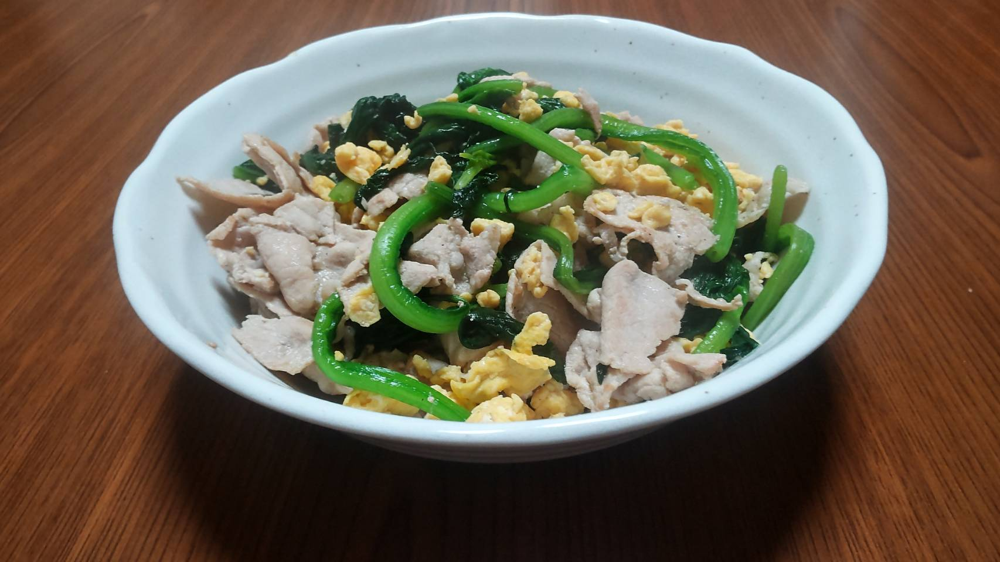
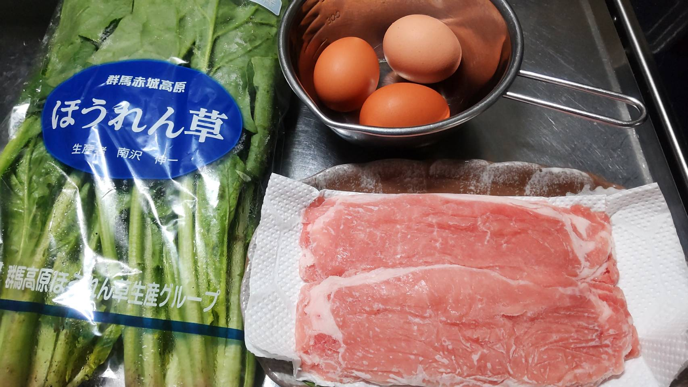
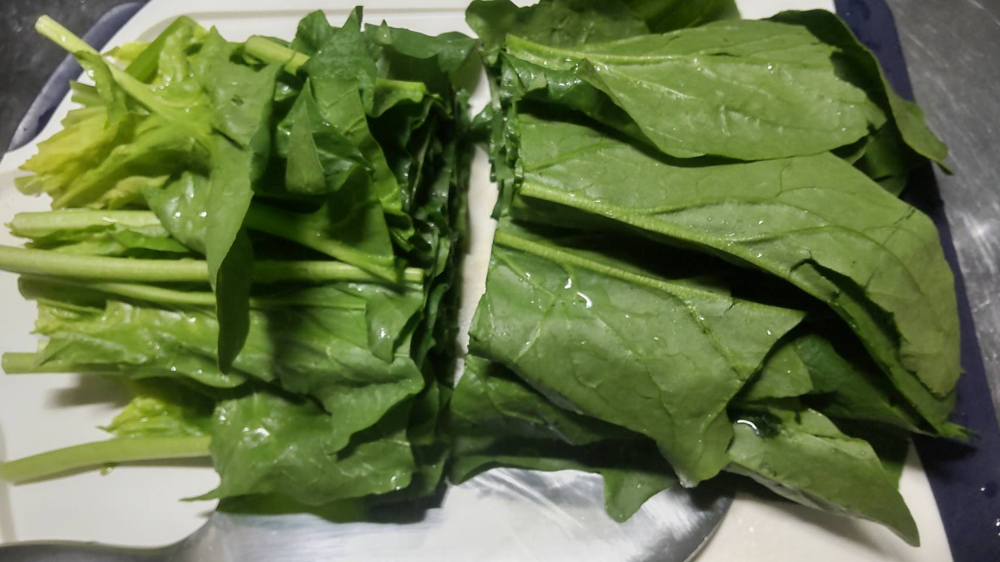
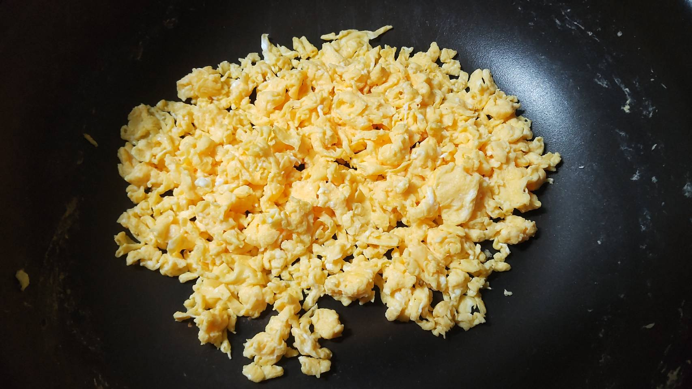

豚たまほうれん草

材料
- 食材
- ほうれん草 150g
- 卵 2~3個
- 豚肉（ロース） 200g
- 調味料
- 塩 適量
- 胡椒 適量
- 醬油 少々
- サラダ油 小さじ1

作り方
-
ほうれん草を水でよく洗い、根元を切り落として2等分にする

※めんどくさがって洗わないと砂や土が落ちず、食べた時にじゃりじゃりします…
- 豚肉を食べやすい大きさに切る
- 卵を溶いておく
-
フライパンにサラダ油を入れて熱し、溶いた卵を入れ火が通るまで大きくかき混ぜる
写真の通りに出来たら別の器に入れ、フライパンを空にする

- フライパンを再び熱し、豚肉を入れ火が通るまでよく炒める
- 豚肉に火が通ったら、ほうれん草を入れしんなりするまで炒める
- 別の器によけておいた玉子をフライパンに戻し、炒めながら混ぜ合わせる
- 塩、胡椒で味を調え、醤油を入れたらさっと炒める
- 豚たまほうれん草
-
豚肉とたまごとほうれん草を使った料理です。
豚肉にはビタミンB1、玉子にはタンパク質、ほうれん草には鉄分がそれぞれ豊富に含まれており、疲れが溜まった時に食べると良いです。
今回使用したのは豚ロース肉でしたが、脂っこいのが好きな人は豚バラ肉を使うとさらに美味しく作れます。
TOPへ戻る